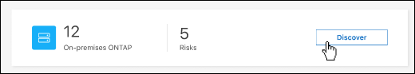
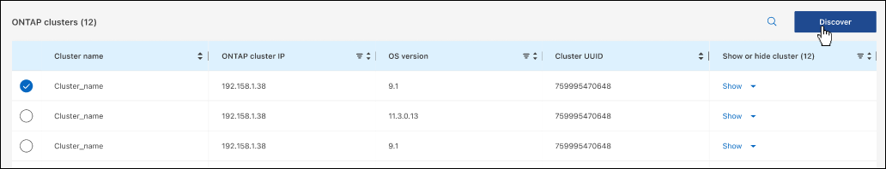

Notes de mise à jour
Notes de mise à jour
Découvrez les clusters ONTAP sur site
 Suggérer des modifications
Suggérer des modifications
Détectez les clusters ONTAP sur site à partir de BlueXP pour commencer à gérer les volumes et effectuer des tâches de gestion avancées à l’aide de ONTAP System Manager, disponible via BlueXP.
Étape 1 : passez en revue les options de découverte et de gestion
BlueXP propose deux options de détection et de gestion pour les clusters ONTAP sur site :
- Détection et gestion à l’aide d’un connecteur
-
Cette option vous permet de gérer les clusters qui exécutent ONTAP 8.3 et versions ultérieures à l’aide des fonctionnalités suivantes :
-
La vue Standard, qui fournit les opérations de base du volume
-
L’affichage avancé, qui permet une gestion via System Manager (pris en charge par ONTAP 9.10.0 et versions ultérieures)
-
Intégration avec les services BlueXP pour la réplication, la sauvegarde et la restauration, la classification des données et le Tiering des données
Cette option requiert un connecteur que vous pouvez installer dans un fournisseur cloud ou sur site.
-
- Découverte et gestion directes
-
Cette option vous permet de gérer les clusters qui exécutent ONTAP 9.12.1 et versions ultérieures via System Manager. Aucune autre option de gestion n’est disponible. Vous ne pouvez pas utiliser la vue Standard et vous ne pouvez pas activer les services BlueXP.
Cette option ne nécessite pas de connecteur.
Lorsque vous accédez à System Manager sur un cluster ONTAP sur site fonctionnant sous 9.12.1 ou version ultérieure et connecté au service BlueXP, vous êtes invité à gérer le cluster directement à partir de BlueXP. Si vous suivez cette invite, il détecte le cluster dans BlueXP à l’aide de l’option de détection directe.
Une fois découverts, vos clusters sont disponibles sous forme d’environnement de travail sur BlueXP Canvas.
Si vous décidez d’utiliser l’autre option de détection ultérieurement, vous devrez découvrir le cluster sur site comme un environnement de travail séparé sur la toile. Vous avez ensuite la possibilité de supprimer l’autre environnement de travail.
Étape 2 : configuration de votre environnement
Avant de découvrir vos clusters ONTAP sur site, assurez-vous de répondre aux exigences suivantes.
- Exigences générales
-
-
Vous devriez avoir commencé avec BlueXP, qui inclut la connexion et la configuration d’un compte.
"Apprenez à vous lancer avec BlueXP" -
Vous avez besoin de l’adresse IP de gestion du cluster et du mot de passe du compte utilisateur admin.
-
BlueXP détecte les clusters ONTAP via HTTPS. Si vous utilisez des politiques de pare-feu personnalisées, le cluster ONTAP doit autoriser l’accès HTTPS entrant via le port 443.
La stratégie de pare-feu " mgmt " par défaut permet l’accès HTTPS entrant à partir de toutes les adresses IP. Si vous avez modifié cette stratégie par défaut ou si vous avez créé votre propre stratégie de pare-feu, vous devez associer le protocole HTTPS à cette politique et activer l’accès à partir de l’hôte du connecteur.
-
- Conditions requises pour la découverte des connecteurs
-
-
Le cluster sur site doit exécuter ONTAP 8.3 ou une version ultérieure.
-
Un connecteur doit être installé dans un fournisseur cloud ou sur site.
Si vous voulez transférer les données inactives vers le cloud, consultez les conditions du connecteur en fonction de l’emplacement où vous prévoyez d’effectuer le Tiering des données inactives.
-
Le connecteur hôte doit autoriser les connexions sortantes via le port 443 (HTTPS) et le cluster ONTAP doit autoriser l’accès HTTP entrant via le port 443.
Si le connecteur est dans le Cloud, toutes les communications sortantes sont autorisées par le groupe de sécurité prédéfini.
-
- Conditions requises pour la découverte directe
-
-
Le cluster sur site doit exécuter ONTAP 9.12.1 ou une version ultérieure.
-
Le cluster doit disposer d’une connectivité entrante et sortante vers le service BlueXP :
https://cloudmanager.cloud.netapp.com/ontap-service/check-service-connection
-
L’ordinateur que vous utilisez pour accéder à la console BlueXP doit disposer d’une connexion réseau au cluster ONTAP sur site, de la même manière que vous pouvez fournir des connexions à d’autres ressources de votre réseau privé.
-
Étape 3 : découverte d’un cluster
Découvrez vos clusters ONTAP sur site depuis la Canvas de deux manières :
-
Dans Canvas > Mes environnements de travail en ajoutant manuellement des détails sur le cluster ONTAP sur site.
-
Dans Canvas > My Estate en sélectionnant un cluster que BlueXP a prédécouvert en fonction des clusters ONTAP associés à l’adresse e-mail de votre connexion BlueXP.
Lorsque vous démarrez le processus de détection, BlueXP détecte un cluster comme suit :
-
Si vous disposez d’un connecteur actif qui dispose d’une connexion à un cluster ONTAP, BlueXP utilisera ce connecteur pour détecter et gérer le cluster.
-
Si vous ne disposez pas d’un connecteur ou si votre connecteur ne dispose pas d’une connexion au cluster ONTAP, BlueXP utilise automatiquement l’option de détection et de gestion directes.
Découvrez un cluster ONTAP sur site dans BlueXP en entrant l’adresse IP de gestion du cluster et le mot de passe du compte utilisateur admin.
-
Dans le menu de navigation, sélectionnez stockage > Canvas.
-
Sur la page Canevas, sélectionnez Ajouter un environnement de travail > sur site.
-
À côté de ONTAP sur place, sélectionnez découvrir.
-
Sur la page Discover, entrez l’adresse IP de gestion du cluster et le mot de passe du compte utilisateur admin.
-
Si vous découvrez le cluster directement (sans connecteur), vous pouvez sélectionner Enregistrer les informations d’identification.
Si vous sélectionnez cette option, vous n’aurez pas besoin de saisir à nouveau les informations d’identification chaque fois que vous ouvrirez l’environnement de travail. Ces identifiants sont uniquement associés à votre connexion utilisateur BlueXP. Elles ne sont pas sauvegardées pour être utilisées par quiconque dans le compte BlueXP.
-
Sélectionnez découvrir.
Si vous ne disposez pas de connecteur et que l’adresse IP n’est pas accessible depuis BlueXP, vous êtes invité à créer un connecteur.
BlueXP découvre le cluster et l’ajoute comme un environnement de travail sur la toile. Vous pouvez maintenant commencer à gérer le cluster.
BlueXP détecte automatiquement les informations sur les clusters ONTAP associés à l’adresse e-mail de votre connexion BlueXP et les affiche sur la page mon patrimoine en tant que clusters non découverts. Vous pouvez afficher la liste des clusters non détectés et les ajouter un par un.
Notez les points suivants concernant les clusters ONTAP sur site qui apparaissent sur la page My Estate :
-
L’adresse e-mail que vous utilisez pour vous connecter à BlueXP doit être associée à un compte NSS (NetApp support site) de niveau complet enregistré.
-
Si vous vous connectez à BlueXP avec votre compte NSS et accédez à la page My Estate, BlueXP utilise ce compte NSS pour rechercher les clusters associés au compte.
-
Si vous vous connectez à BlueXP avec un compte cloud ou une connexion fédérée et que vous accédez à la page My Estate, BlueXP vous invite à vérifier votre e-mail. Si cette adresse e-mail est associée à un compte NSS, BlueXP utilise ces informations pour rechercher les clusters associés au compte.
-
-
BlueXP affiche uniquement les clusters ONTAP qui ont envoyé des messages AutoSupport à NetApp avec succès.
-
Pour actualiser la liste d’inventaire, quittez la page Ma succession, attendez 5 minutes, puis revenez à la page.
-
Dans le menu de navigation, sélectionnez stockage > Canvas.
-
Sélectionnez Ma succession.
-
Sur la page Ma succession, sélectionnez découvrir pour ONTAP sur site.

-
Sélectionnez un cluster, puis sélectionnez Discover.

-
Entrez le mot de passe du compte utilisateur admin.
-
Sélectionnez découvrir.
Si vous ne disposez pas de connecteur et que l’adresse IP n’est pas accessible depuis BlueXP, vous êtes invité à créer un connecteur.
BlueXP découvre le cluster et l’ajoute comme un environnement de travail sur la toile. Vous pouvez maintenant commencer à gérer le cluster.